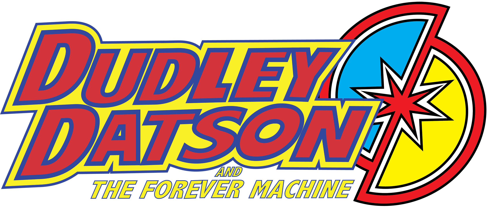

Buy Physical
Buy Digital
Dudley Datson and the Forever Machine written by Scott Snyder with art by Jamal Igle and Juan Castro and colors by Chris Sotomayor—Teenager Dudley Datson finds himself the keeper of a device that opens up time and space. But when Dudley finds himself on an earth where dinosaurs rule, can he find his way back?
Jamal Igle
Jamal Igle is a recipient of the 2011 Inkpot Award for outstanding achievement in Comic Art. He is the writer/artist/creator of Molly Danger for Action Lab Entertainment, co-creator of Venture with Dynamo 5 creator/writer Jay Faerber and the penciller/co-creator of The Wrong Earth with writer and editor in chief Tom Peyer for Ahoy Comics. Jamal is a comic industry veteran whose detailed pencils have graced books as varied as Narrative of the Life of Frederick Douglass, the all-ages action miniseries Race Against Time as well as mainstream hits such as G.I. Joe, Iron Man, Spider-Man and Green Lantern. Jamal has served as the series artist for Firestorm the Nuclear Man, Nightwing, Tangent: Superman's Reign, Superman, Supergirl and Zatanna for DC Comics, Noble Causes for Image Comics and a four-issue run on New Warriors for Marvel Comics. He's done just about everything from acting on the small screen to voiceovers for commercials, packaging books for Scholastic, storyboards artist on Roughnecks: Starship Trooper Chronicles and Max Steel: MX1 for Sony Animation. Jamal is also a popular guest lecturer on the subjects of comics and animation. He is currently working on the sequels of both the hit series BLACK called WHITE from Black Mask Studios and The Wrong Earth: Night and Day.